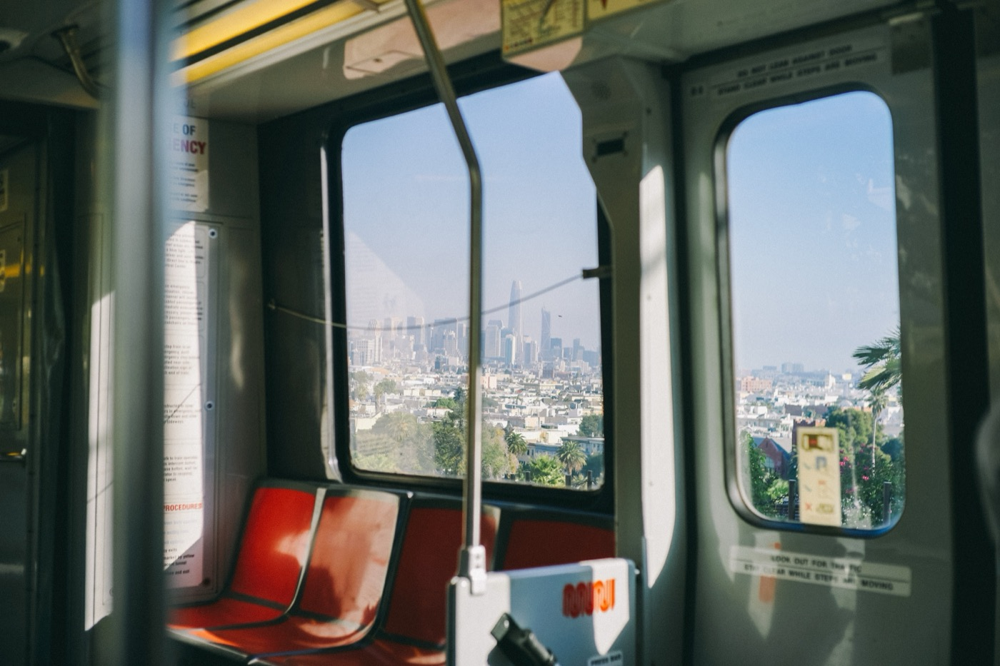
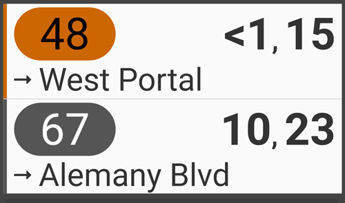
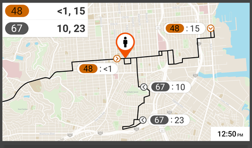
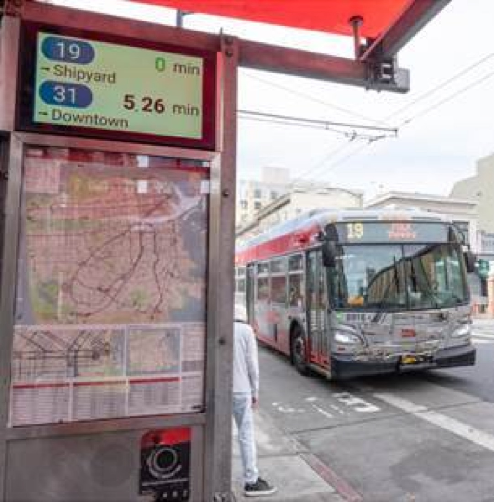
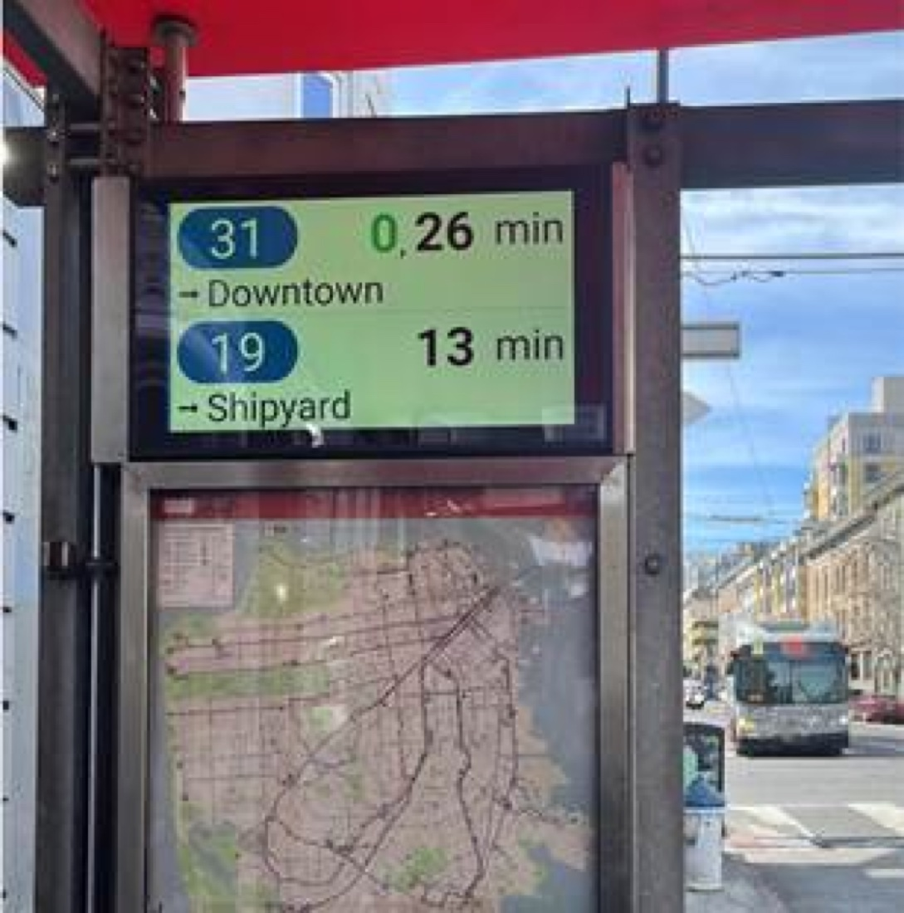
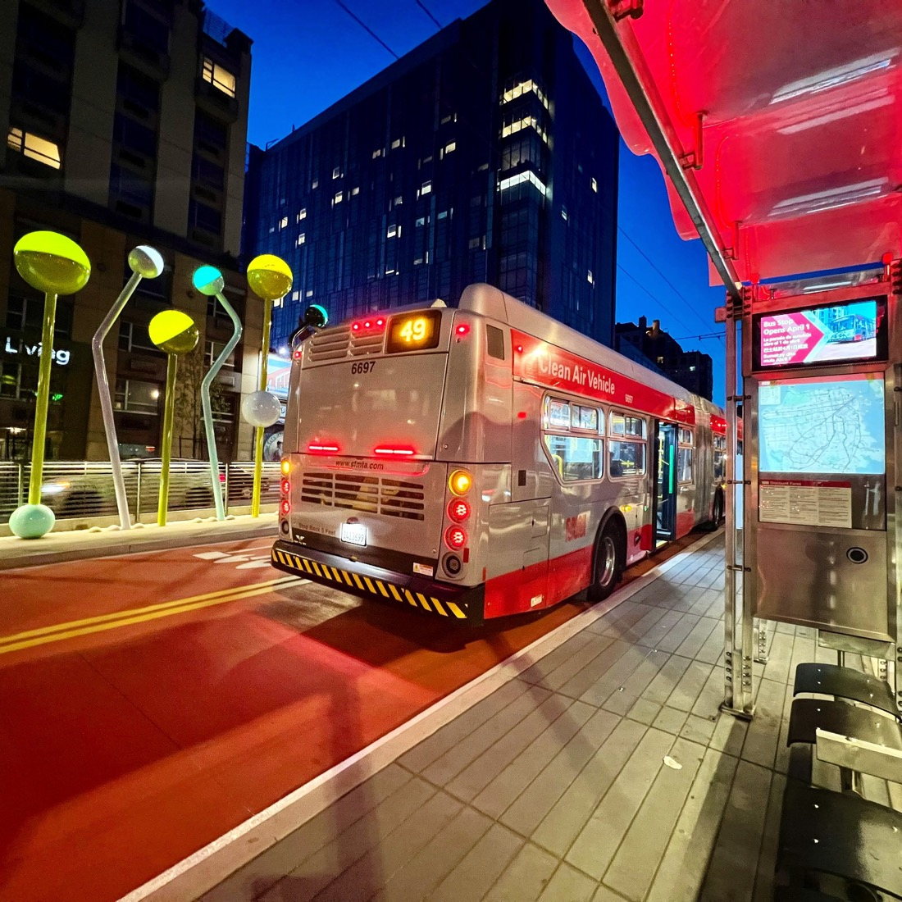
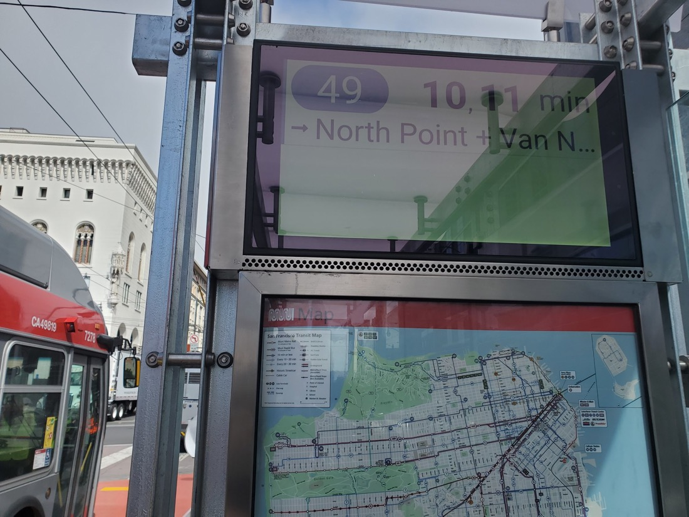

- Role
- Sole UI/UX Designer, end to end
- Client
- Digital signage hardware company, San Francisco
- Timeline
- Three months in design, live since 2022
- Delivery
- Fully remote
Transit information every rider can read, from the curb
The client, a San Francisco company specializing in hardware for digital signage, needed an interface for screens at bus stops across the city. The deadline was three months, and the whole project ran remotely.
A bus stop screen is public infrastructure. It has to be legible at street distance, stay readable for riders with low vision or color vision deficiency, and win approval from the city as well as the client.

Settle every constraint before drawing a screen
Before sketching a single screen, I asked the client the questions that would shape everything else.
- Which information do we need to display?
- What are the government's requirements?
- Does it need to be ADA compliant?
- Where will it run, and on which hardware?
ADA requirements
- 01
Font size & scale
I sized the type to stay legible at street distance, to the Americans with Disabilities Act's accessible design standards.
- 02
Contrast ratios
I checked every pairing of text and background against ADA contrast requirements before it shipped.
- 03
A palette for colorblind riders
I chose route colors and status states to stay distinguishable for riders with color vision deficiency.
From constraints to rollout
- 01
Understanding the constraints
Gathered the government, hardware, and accessibility requirements the interface would have to satisfy before any screen was drawn.
- 02
Working the layout by hand
Explored arrangements for routes, arrival times, and maps at low fidelity, before committing to any single direction.
- 03
Building the real UI
Turned the strongest sketches into detailed, polished screens, applying type, contrast, and color that met every ADA requirement.
- 04
Client and government approval
Reviewed the mockups with both the client and the local government to confirm the design met every accessibility standard.
- 05
From mockup to build
Handed off specs and assets, working closely through implementation to keep the shipped screens faithful to the design.
- 06
Approved and deployed
A final round of approval from the client and the city cleared the interface for rollout across the network.
An arrivals board and a route map, built to ADA standards
I sized the type for street distance, checked the contrast of every pairing, and chose a palette that stays distinguishable for colorblind riders.


Approved by the city, and running since 2022
The screens run in various locations across the city, bus stops among them.




800+ screens deployed, approved by the client and the City of SF, operational since 2022.
Have a company worth skyrocketing?
I'm open to full-time roles and looking to join a team where I can bring a decade of product design and make a meaningful impact. If you're hiring, I'd love to hear about what you're building.